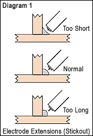
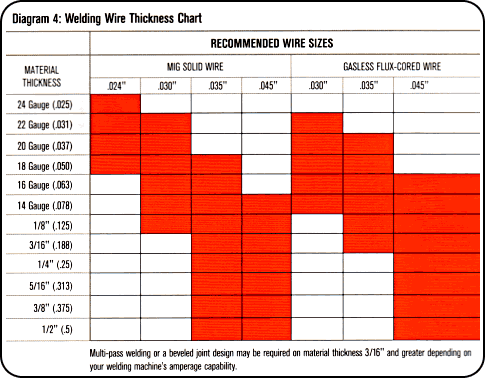
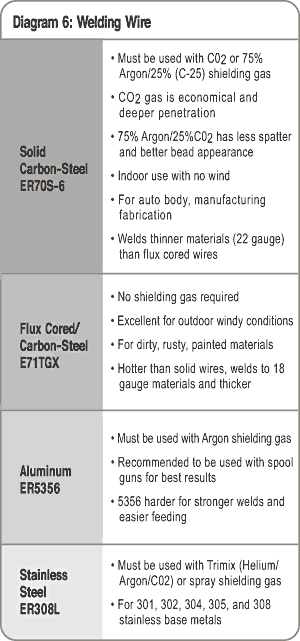
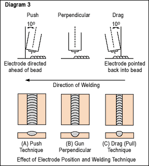
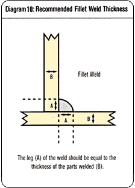
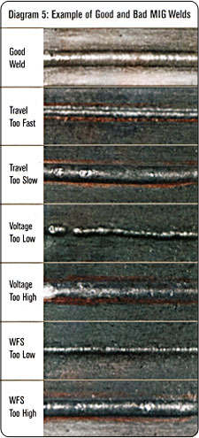
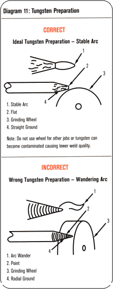
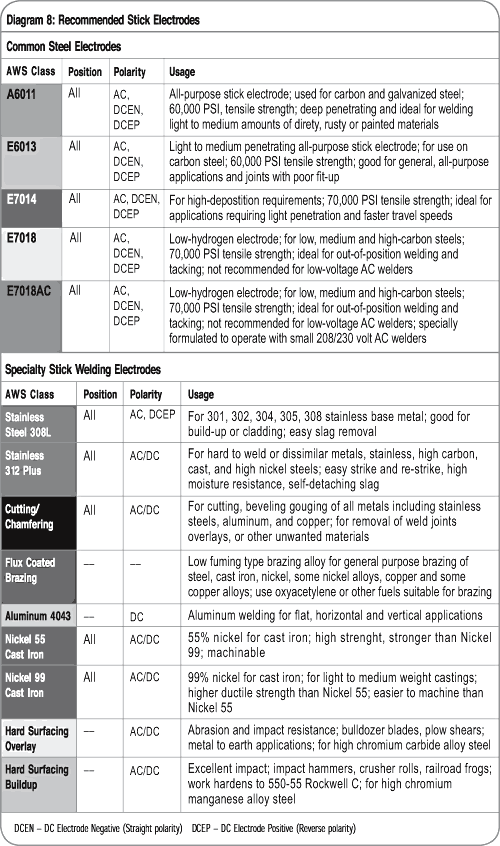
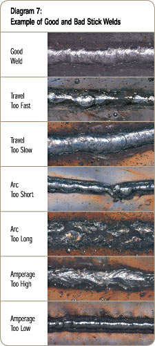
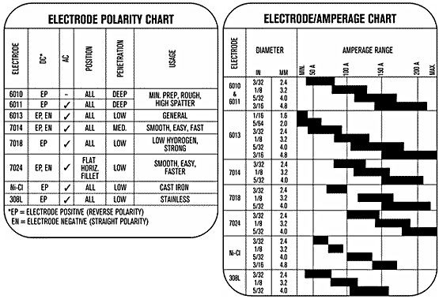

These welding tips are meant to be helpful hints. See your equipment Owner's Manual for all safety and operational information.
(Approx. 0.9 MB)
| 1. Keep a 1/4 to 3/8 in stickout (electrode extending from the tip of the contact tube.) (Refer to Diagram 1. Electrode Extensions)
|

|
2. For thin metals, use a smaller diameter wire. For thicker metal use a larger wire and a larger machine. See machine recommendations for welding capacity. (Refer to Diagram 4. Welding Wire Thickness Chart)

|
| 3. Use the correct wire type for the base metal being welded. Use stainless steel wires for stainless steel, aluminum wires for aluminum, and steel wires for steel. |
| 4. Use the proper shielding gas. CO2 is good for penetrating welds on steel, but may be too hot for thin metal. Use 75% Argon/25% CO2 for thinner steels. Use only Argon for aluminum. You can use a triple-mix for stainless steels (Helium + Argon + CO2). (Refer to Diagram 2. Penetration Patterns for Steel)
|

|
|
5. For steel, there are two common wire types. Use an AWS classification ER70S-3 for all purpose, economical welding. Use ER70S-6 wire when more deoxidizers are needed for welding on dirty or rusty steel. (Refer to Diagram 6. Welding Wire)
|
 |
|
6. For best control of your weld bead, keep the wire directed at the leading edge of the weld pool.
|
|
7. When welding out of position (vertical, horizontal, or overhead welding), keep the weld pool small for best weld bead control, and use the smallest wire diameter size you can.
|
|
8. Be sure to match your contact tube, gun liner, and drive rolls to the wire size you are using.
|
| 9. Clean the gun liner and drive rolls occasionally, and keep the gun nozzle clean of spatter. Replace the contact tip if blocked or feeding poorly. |
| 10. Keep the gun straight as possible when welding, to avoid poor wire feeding. |
| 11. Use both hands to steady the gun when you weld. Do this whenever possible. (This also applies to Stick and TIG welding, and plasma cutting.) |
| 12. Keep wire feeder hub tension and drive roll pressure just tight enough to feed wire, but don't overtighten. |
| 13. Keep wire in a clean, dry place when not welding, to avoid picking up contaminants that lead to poor welds. |
| 14. Use DCEP (reverse polarity) on the power source. |
| 15. A drag or pull gun technique will give you a bit more penetration and a narrower bead. A push gun technique will give you a bit less penetration, and a wider bead. (Refer to Diagram 3. Effect of Electrode Position and Welding Technique) |
 |
| 16. When welding a fillet, the leg of the weld should be equal to the thickness of the parts welded.(Refer to Diagram 10. Recommended Fillet Weld Thickness) |
 |
| 17. Compare your weld to our photos to determine proper adjustments. (Refer to Diagram 7. Example of Good and Bad MIG Welds |
 |
(Approx. 0.05 MB)
| 1. The best feeding of wire for aluminum is done with a spool gun. If you can't use a spool gun, use the shortest gun possible and keep the gun as straight as possible. Use Argon only for shielding gas. Only use a push gun technique when welding aluminum. |
| 2. If you are having feeding problems, one thing you can try is a contact tip that is one size bigger than your wire. |
| 3. The most common wire type is ER4043 for all-purpose work. ER5356 is a stiffer wire (easier to feed), and is used when more rigid, higher-strength weld properties are needed. |
| 4. Clean the aluminum before welding, to remove the oxide layer. Use a stainless steel wire brush used only for cleaning aluminum. |
| 5. Fill the crater at the end of the weld to avoid a crack. One way to do this is to dwell in the weld pool for a second at the end of the weld. |
(Approx. 0.05 MB)
(Approx. 0.07 MB)
| 1. Use Argon shielding for steel, stainless, and aluminum. |
| 2. Use DC-Straight Polarity (DCEN) for steel and stainless. Use AC for aluminum. |
| 3. Always use a push technique with the TIG torch. |
| 4. Match the tungsten electrode size with the collet size. |
| 5. Aluminum - use a pure tungsten, AWS Class EWP (green identifying band). Will form a balled-end in AC. |
| 6. Steel and stainless steel - use a 2% thoriated tungsten, AWS Class EWTH-2 (red identifying band). Prepare a pointed-end for DCEN welding. (Refer to Diagram 11. Tungsten Preparation)
|
 |
| 7. When welding a fillet, the leg of the weld should be equal to the thickness of the parts welded.(Refer to Diagram 10. Recommended Fillet Weld Thickness)
|
|
(Approx. 0.46 MB)
| 1. Take precautions with flying materials when chipping slag. |
| 2. Keep electrodes clean and dry - follow manufacturer's recommendations. |
3. Common steel electrodes: (Refer to Diagram 8. Recommended Stick Electrodes)
 |
| 4. Penetration: DCEN - Least penetration, AC - medium (can be more spatter also), DCEP - most penetration. |
| 5. When welding a fillet, the leg of the weld should be equal to the thickness of the parts welded. (Refer to Diagram 10. Recommended Fillet Weld Thickness) |
|
| 6. To set your amperage control, first determine recommended amp range for your electrode type and diameter. Then pick an amperage within the range based on your metal thickness (thinner metal, less amps). (Refer to Diagram 7. Example of Good and Bad Stick Welds) |
 |
| 7. Electrode Polarity and Amperage |
|  |
(Approx. 0.04 MB)
| 1. Clean, dry, oil-free air is important. |
| 2. Stay at recommended air pressure (more air is not necessarily better!) |
| 3. Touch torch tip gently to workpiece. |
| 4. When initiating a cut, start on the end of material to be cut and ensure arc has completely penetrated metal before proceeding further. |
| 5. When completing cut, pause at the end to assure severance. |
| 6. Torch should be perpendicular to workpiece. |
| 7. Work cable should be attached as close to workpiece cut as possible. |
| 8. If you can see the arc coming through the bottom of the cut metal, it will eliminate guessing if your travel speed is correct. |
(Approx. 0.05 MB)
| 1. Resistance welding is not recommended for aluminum, copper, or copper alloys. Use for steel and stainless steel only. |
| 2. For more heat (amperage output), use shorter tongs. |
| 3. For units without a heat control, tong length can be used for a control. For instance, for thin metals where you want less heat, longer tongs can be used. |
| 4. Keep in mind that longer tongs can bend, and you may lose pressure at the weld. |
| 5. For the metals being welded, make sure there is no gap between the pieces - this will weaken the weld. |
| 6. Keep the alignment of the tongs straight, so that the tips touch each other exactly. Also, maintain a proper pressure adjustment - not too much or too little pressure. |
| 7. When you need one side of the weld to have good appearance, you can flatten (machine) the tip somewhat on that side.
|
| 8. Clean the tips on a regular basis, or you will lose output (amperage). Dress the tips with a proper tip dresser. |